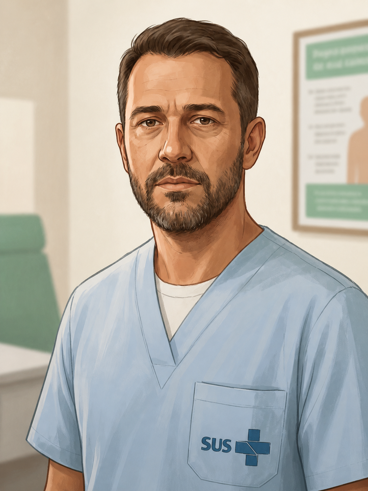
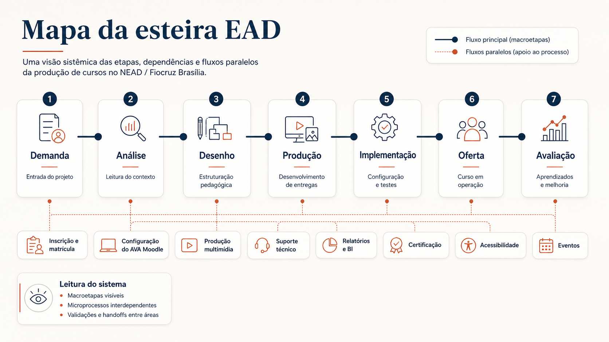

Múltiplos atores
Design Instrucional, multimídia, TI, suporte, coordenação, conteudistas e áreas demandantes.
Como usei UX Research e Design de Serviço para mapear a esteira de produção do NEAD/Fiocruz Brasília — seus gargalos, papéis, dependências e pontos de retrabalho.
A produção de cursos EAD no NEAD/Fiocruz Brasília envolve concepção pedagógica, materiais, multimídia, configuração no AVA, suporte, avaliação e publicação.
O projeto investigou a experiência dos colaboradores que operam essa produção. O objetivo era entender onde decisões, validações e registros se perdiam entre áreas.
A entrega foi um diagnóstico da esteira e uma base para o framework ADDIE-UX, tratando o processo interno como serviço e os colaboradores como usuários.
Este case mostra como organizei a leitura da produção EAD na Fiocruz Brasília, olhando para o trabalho dos colaboradores que operam a esteira.
No NEAD/Fiocruz Brasília, a produção de cursos passa por equipes, documentos, materiais, AVA, suporte e avaliação. O trabalho depende de alinhamento entre áreas e de registros claros em cada passagem.
Design Instrucional, multimídia, TI, suporte, coordenação, conteudistas e áreas demandantes.
Análise, desenho, desenvolvimento, implementação, oferta, avaliação e ajustes.
Documentos, planilhas, Moodle, BI, canais de comunicação e registros operacionais.
Cada entrega podia abrir nova rodada de revisão, alinhamento ou correção.
O desafio era entender como o trabalho atravessava áreas, ferramentas e decisões.
A esteira reunia macroetapas visíveis e microprocessos internos. Entre uma etapa e outra, decisões, responsáveis, prazos e registros nem sempre estavam claros para todos.
Parte do esforço era gasto reconstruindo histórico, decisões e arquivos.
Nem sempre ficava claro quem decidia, validava ou executava cada passagem.
Ajustes voltavam para etapas anteriores quando faltava alinhamento.
O andamento do curso dependia de registros espalhados em diferentes ferramentas.
O projeto precisava tornar o processo mais legível para quem participa dele.
Antes de otimizar a produção EAD, era preciso compreender a experiência de quem sustenta essa produção. O colaborador não era apenas executor de tarefas; ele era usuário de um serviço interno, atravessado por fluxos, ferramentas, dependências, decisões e ruídos de comunicação.
O redesign da esteira começava pelo diagnóstico da experiência interna.
A pesquisa partiu da premissa de que a esteira de produção deveria ser analisada como um serviço. O objetivo era mapear o fluxo atual, identificar pontos de atrito e gerar uma base clara, baseada em evidências, para futuras otimizações.
A investigação combinou pesquisa qualitativa aplicada a 17 colaboradores, análise documental, mapeamento de jornada, Service Blueprint e Matriz CSD para organizar certezas, hipóteses e dúvidas sobre o funcionamento da esteira.
Formulário aplicado a 17 membros da equipe multidisciplinar do NEAD.
Design Instrucional, Design Visual/UX/UI, Desenvolvimento, Multimídia, Gestão/Coordenação, Suporte Técnico e Administração do AVA.
Representação do fluxo sob a ótica da persona Paula, usuária interna da esteira.
Mapeamento de ações visíveis, bastidores, sistemas de suporte e gargalos estruturais.
Organização de certezas, suposições e dúvidas para orientar próximos passos.
A pesquisa qualitativa com 17 colaboradores do NEAD/Fiocruz Brasília permitiu priorizar os desafios mais recorrentes da esteira de produção. O achado principal foi que problemas no início do fluxo geravam efeito cascata sobre planejamento, prototipação, revisão e retrabalho.
As personas sintetizam perfis envolvidos na produção EAD e ajudam a visualizar como diferentes papéis experimentam o mesmo processo de formas distintas.
Criar cursos eficazes e engajadores; ter um fluxo de trabalho previsível; colaborar de forma fluida com os colegas.
As demandas chegam muito abertas. Ela passa mais tempo tentando decifrar o que precisa ser feito do que criando de fato.
Contexto, critérios e validações antes da produção avançar.
“Eu amo o que eu faço, só gostaria de ter um processo que me ajudasse a fazer melhor.”
Capacitar rapidamente profissionais de saúde; garantir precisão técnica do conteúdo.
Sabe o conteúdo, mas nem sempre sabe como traduzir isso para um curso online.
Orientação para estruturar escopo, objetivos, formato e expectativas.
“Minha urgência é o conteúdo. Os detalhes de formato eu confio na equipe para resolver.”

Aprender algo aplicável à prática profissional; concluir o curso sem dificuldades técnicas.
Sente os efeitos indiretos de atrasos, inconsistências e baixa padronização.
Cursos claros, objetivos, consistentes e bem estruturados.
“O curso é bom, mas precisa ser mais direto ao ponto.”
O primeiro passo foi tornar visível o que antes estava disperso: etapas, atores, ferramentas, validações e microprocessos que sustentavam a produção de cursos EAD.

A jornada evidencia que o esforço da equipe não estava apenas em executar tarefas, mas em entender o sistema, reconstruir contexto e lidar com dependências invisíveis.
Demanda chega vaga, sem briefing estruturado.
Início do ciclo de incertezas.
Criar briefing estruturado e critérios mínimos de entrada.
Tentativa de estruturar o projeto com informações incompletas.
A equipe precisa tomar decisões com base em contexto instável.
Centralizar contexto, objetivos, responsáveis e restrições.
Criação sobre escopo ainda instável.
Insegurança e retrabalho potencial.
Inserir validações intermediárias antes de avançar.
Execução técnica com base nos protótipos aprovados.
Ajustes tardios podem impactar produção e implementação.
Conectar melhor design, desenvolvimento e critérios de aceite.
Ciclos de revisão e aprovação.
Revisões lentas, mudanças de escopo tardias e alto custo de alteração.
Padronizar critérios de validação e antecipar feedbacks.
Curso finalizado e publicado no AVA Moodle.
Aprendizados do processo nem sempre retroalimentam ciclos futuros.
Criar documentação viva e retrospectiva da esteira.
O blueprint conecta ações visíveis, processos internos, sistemas utilizados e gargalos estruturais da operação.
A Matriz CSD ajudou a organizar os achados da pesquisa em certezas, suposições e dúvidas, evitando que hipóteses fossem tratadas como fatos e apontando próximos passos de investigação.
O framework ADDIE-UX nasce como uma camada organizadora sobre o processo existente. Ele não substitui o ADDIE tradicional; amplia sua leitura com foco em experiência, operação, visibilidade e melhoria contínua.
Demandas chegam com níveis diferentes de clareza e documentação.
Briefing estruturado e critérios mínimos de entrada.
Menos desalinhamento no início do projeto.
Escopo, objetivos e fluxo pedagógico nem sempre ficam visíveis para todos.
Mapas de decisão, cronograma e alinhamento entre áreas.
Mais clareza de responsabilidades e dependências.
Produções paralelas geram ruído e retrabalho.
Checkpoints intermediários e documentação viva.
Menos validações tardias e mais previsibilidade.
Configuração no AVA, testes e suporte dependem de múltiplos microfluxos.
Checklist operacional e padronização de etapas críticas.
Menos falhas de passagem entre produção e oferta.
Aprendizados do curso nem sempre retroalimentam o processo.
Rituais de retrospectiva e documentação de melhoria contínua.
A esteira aprende a cada ciclo.
O ADDIE-UX organiza a esteira em camadas. A proposta não é criar mais uma metodologia isolada, mas tornar visíveis os pontos de decisão, os rituais, os critérios e as oportunidades de melhoria dentro do processo existente.
Estrutura base: análise, desenho, desenvolvimento, implementação e avaliação.
Experiência do fluxo: clareza, visibilidade, redução de carga cognitiva.
Operação: briefings, rituais, checklists e documentação viva.
Amplificação futura: organização, análise e apoio a tarefas repetitivas.
Depois do mapeamento, ficou possível enxergar onde agentes de IA poderiam apoiar: leitura de documentos, descrição de imagens, organização de requisitos, checklists e padronização de entregas. Mas a automação só faz sentido quando o processo já foi compreendido.
Apoio à descrição de imagens e adequação de materiais legados.
Organização de diretrizes, padrões e entregáveis.
Apoio à síntese de materiais extensos e requisitos de curso.
Apoio a checklists, fluxos e registros de decisão.
Como este case se estrutura como diagnóstico e base estratégica, o impacto é apresentado como esperado: uma operação mais visível, menos dependente de reconstrução de contexto e mais preparada para melhoria contínua.
A equipe passa a enxergar etapas, dependências e pontos de decisão.
Briefings, checkpoints e critérios de validação reduzem ciclos desnecessários.
Colaboradores deixam de operar apenas por reconstrução de contexto.
Processos estruturados tornam agentes de IA mais úteis e seguros.
A operação ganha cadência, documentação e critérios compartilhados.
A avaliação passa a retroalimentar a esteira, não apenas o produto final.
O ADDIE-UX nasce dessa leitura: antes de escalar soluções, é preciso estruturar o sistema que sustenta a produção.
Este case mostra UX como ferramenta estratégica para diagnosticar processos, revelar dependências invisíveis e criar bases mais consistentes para operação, colaboração e automação futura.